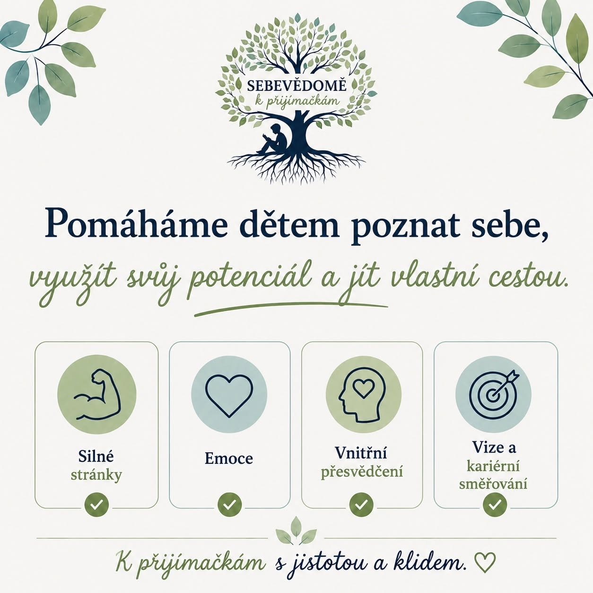

Pomáháme dětem poznat sami sebe

Příprava na přijímací zkoušky není jen o testech a správných odpovědích. Skutečný úspěch stojí na tom, jak dobře člověk zná sám sebe.
Proto v programu Sebevědomě k přijímačkám rozvíjíme čtyři základní pilíře sebepoznání:
✨ Silné stránky
Pomáháme dětem objevit a pojmenovat to, v čem jsou dobré. Právě jejich jedinečné schopnosti jsou základem pro rozvoj vlastního potenciálu.
💚 Emoce
Učíme děti rozumět svým emocím a vnímat je jako důležitého průvodce, který jim pomáhá lépe se rozhodovat a zvládat náročné situace.
🌱 Vnitřní přesvědčení
Společně odhalujeme myšlenky, které děti podporují, i ty, které je zbytečně brzdí. Učíme se nahrazovat sebekritiku zdravým sebevědomím a důvěrou ve vlastní schopnosti.
🎯 Vize a kariérní směřování
Vedeme děti k tomu, aby přemýšlely o své budoucnosti, poznaly své hodnoty a dokázaly si zodpovědně vybírat cestu, která jim dává smysl a zároveň přináší hodnotu společnosti.
Věříme, že sebepoznání není něco „navíc“. Je to základ, na kterém mohou děti stavět nejen při přijímačkách, ale i v dalším životě.
Proto neučíme děti jen uspět u zkoušek. Pomáháme jim vyrůst v sebevědomé a spokojené osobnosti.
Chcete, aby vaše dítě šlo k přijímačkám s jistotou?
Přihlásit dítě